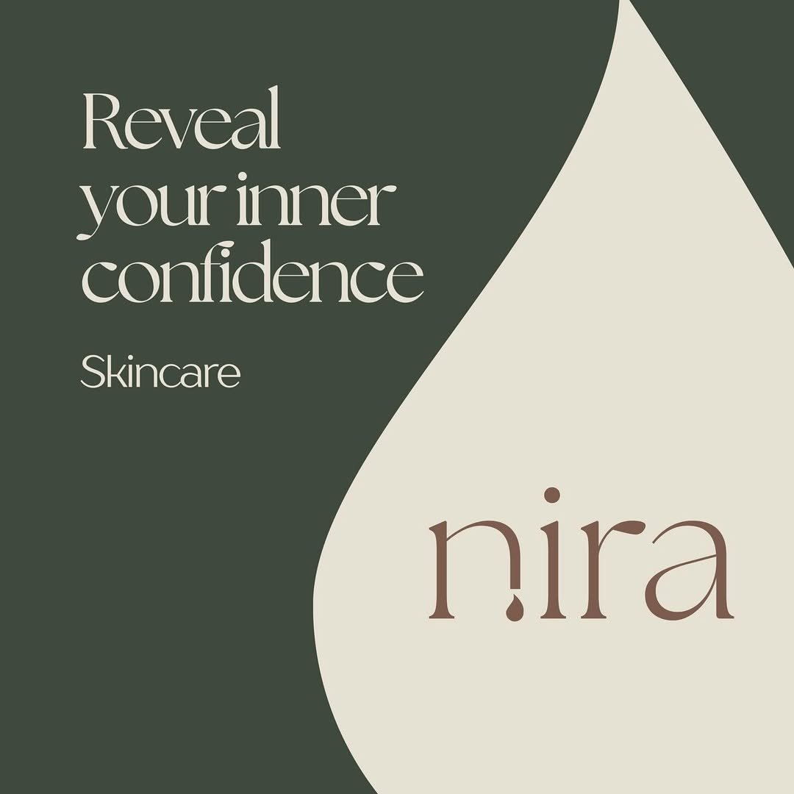
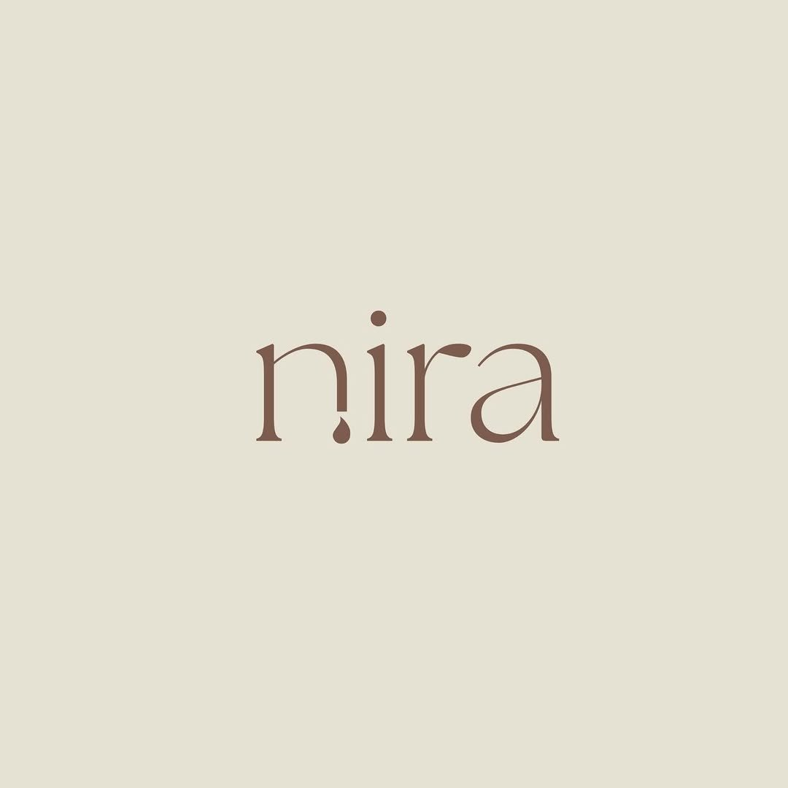
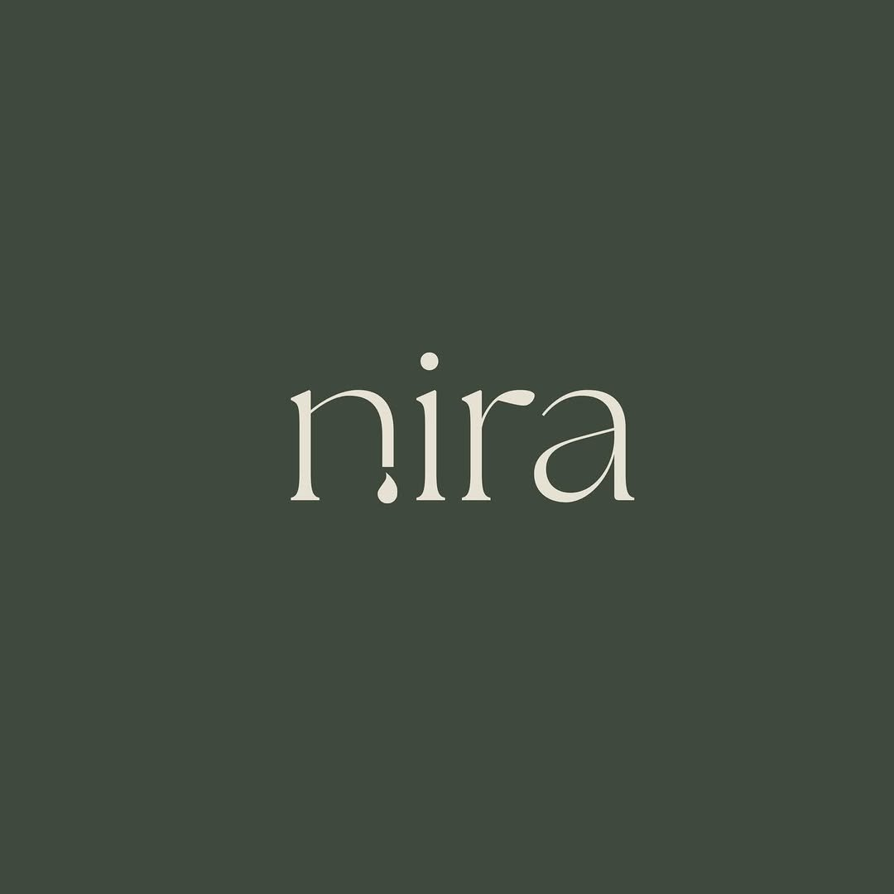
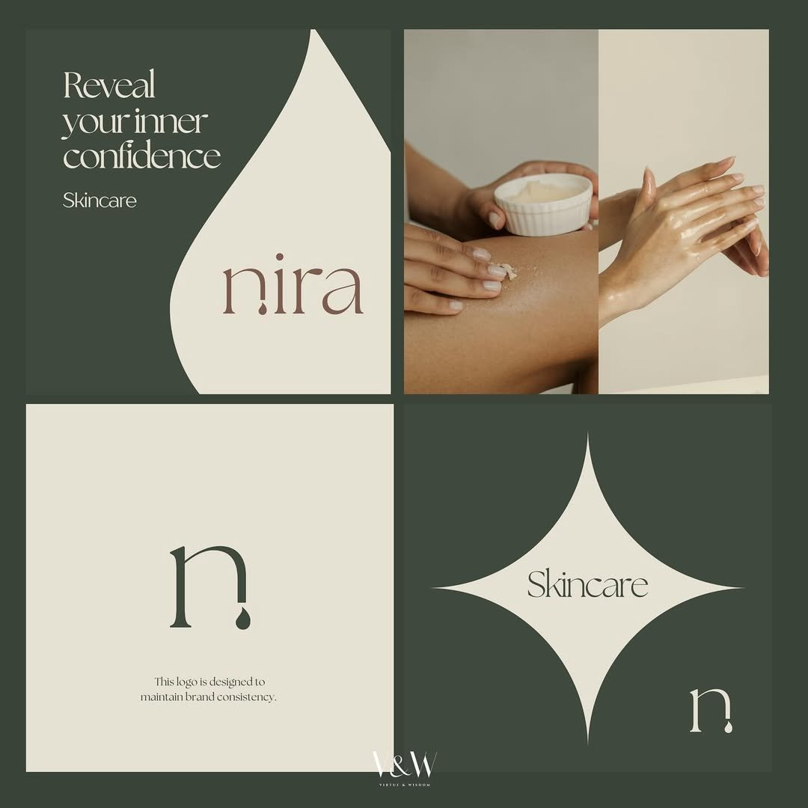
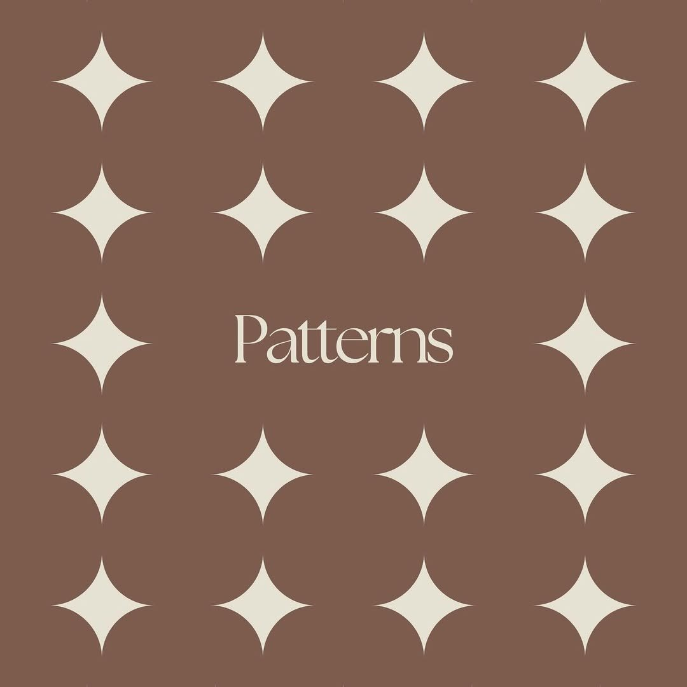
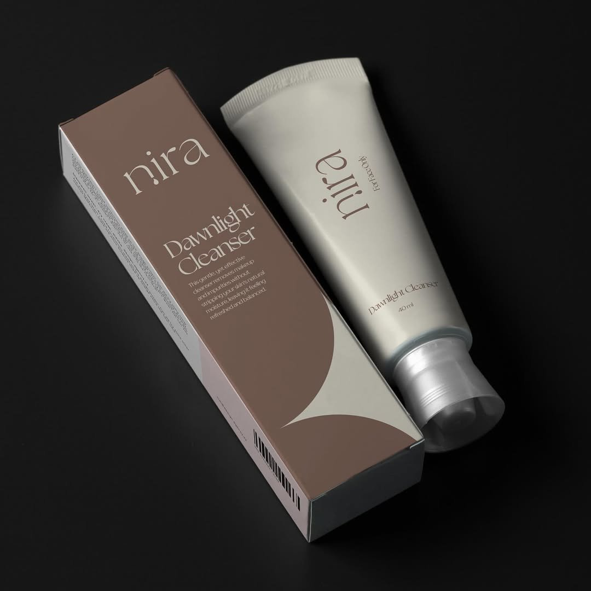

Start a project
Start a project
Start a project
Start a project
A skincare brand whose name means light. We built an identity where every detail catches the eye like sunlight on dewy skin — a brand confident enough to whisper.

Nira came to us with strong product science but no visual world. The skincare aisle is crowded with bright pinks, clinical whites, and copy that sells anxiety. We pulled hard in the opposite direction: the calmest brand on the shelf.
The name is Hebrew for light — or shining. So that became the brief: build an identity that glows quietly, the way real, healthy skin does. No screaming. No clinical sterility. Just a brand that says, "for skin that's already beautiful."
The wordmark hides the brand's secret. We removed the dot from the lowercase i — and let it fall.
A single drop of serum. A tear of dew. A moment of light made physical. It's the kind of detail you don't notice at first — and then can't unsee.


Two earthy primaries do the heavy work — a deep, grounded sage and a warm, lived-in mauve. Cream and bone keep the system airy. No clinical white, no neon, no compromises. The result feels grown-up and quietly feminine, like a brand that doesn't need to introduce itself.

A four-pointed star — sharp, weightless, repeated. It reads as sunlight catching skin, or the glint a serum leaves behind.
Used quietly: as packaging texture, divider page, or a single mark sitting at the corner of a layout. Always in service of the product, never competing with it.



"The smallest mark on the page does the loudest work. A missing dot, a falling drop — that's the brand."
— Identity Notes · Nira Brand Guidelines